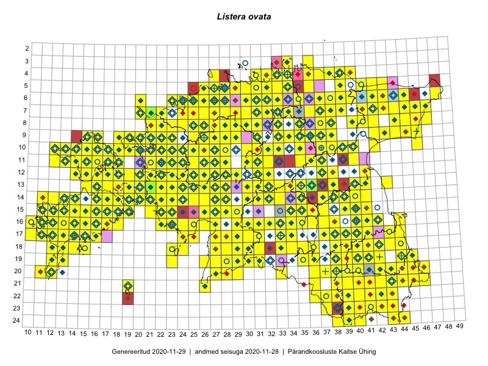

Listera ovata
Uuendatud: 2016-12-01
Kaardile koondatud taksonid: Listera ovata (L.) R.Br.

Kaart põhineb 1104 kirjel.
Kuvatud viited 20 esimesele andmebaasikirjele, ülejäänud PlutoFis
- Tiit Hallikma, Toomas Kukk, Indrek Tammekänd: 2015-06-09: 12-28: ala
- Peedu Saar, Timo Luhamäe: 2015-05-10: 12-32: ala
- Peedu Saar, Timo Luhamäe: 2015-05-10: 12-32: GPS punkt
- Peedu Saar, Liina Oja: 2015-05-22: 19-30: ala
- Peedu Saar, Liina Oja: 2015-05-22: 19-30: GPS punkt
- Thea Kull: 2015-07-07: 16-40: ala
- Peedu Saar, Liina Oja: 2015-05-20: 18-27: ala
- Peedu Saar, Liina Oja: 2015-05-22: 18-27: GPS punkt
- Rein Kalamees, Kersti Püssa: 2015-07-15: 20-45: GPS punkt
- Rein Kalamees, Kersti Püssa: 2015-07-15: 20-45: GPS punkt
- Rein Kalamees, Kersti Püssa: 2015-07-15: 20-45: GPS punkt
- Malle Leht: 2015-08-02: : ala
- Peedu Saar, Liina Oja: 2015-05-21: 16-24: ala
- Peedu Saar, Liina Oja: 2015-05-21: 16-24: GPS punkt
- Peedu Saar, Liina Oja: 2015-05-21: 16-25: ala
- Peedu Saar, Liina Oja: 2015-05-21: 16-25: GPS punkt
- Peedu Saar, Liina Oja: 2015-05-20: 18-28: ala
- Peedu Saar, Toomas Kukk: 2015-05-28: 11-17: ala
- Peedu Saar, Toomas Kukk: 2015-05-28: 10-15: ala
- Peedu Saar, Toomas Kukk: 2015-05-27: 09-16: ala